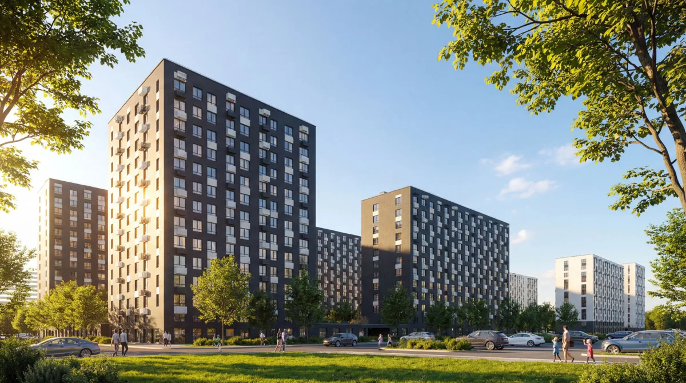

С дескриптором
Республиканская Строительная Компания
РСК / Бренд-центр
Знак, цвет, голос и архитектура.
Фирменный стиль компании — в одном месте.

01 / Логотип
Оригинальный знак с сайта РСК. Полная версия и компактный знак без дескриптора.
Сохраняйте пропорции. Масштабируйте знак целиком, не меняя ширину и высоту отдельно.
Используйте исходник. Не набирайте буквы логотипа шрифтом и не добавляйте тени или обводки.
02 / Палитра
Палитра извлечена из логотипа и интерфейса rsk-development.ru. Нажмите на код, чтобы скопировать.
RGB 105 · 202 · 255
RGB 0 · 167 · 255
RGB 246 · 246 · 246
RGB 255 · 255 · 255
Это цифровая палитра сайта. Значения CMYK и Pantone нужно сверять с печатным брендбуком.
03 / Типографика
Golos Text, гарнитура сайта РСК. Четыре начертания: Regular, Medium, SemiBold и Bold.
Аа Бб Вв Гг Дд Ее Ёё Жж Зз Ии Йй Кк Лл Мм Нн Оо Пп Рр Сс Тт Уу Фф Хх Цц Чч Шш Щщ Ъъ Ыы Ьь Ээ Юю Яя
Aa Bb Cc Dd Ee Ff Gg Hh Ii Jj Kk Ll Mm Nn Oo Pp Qq Rr Ss Tt Uu Vv Ww Xx Yy Zz
0123456789 !? @ № % & ()
04 / Архитектура
Материалы шести жилых комплексов. Исходные изображения и дополнительные ракурсы доступны на Яндекс Диске.
Проектов не найдено. Попробуйте другое название или выберите все города.
Открыть всю папку рендеров ↗05 / Материалы
Готовые комплекты и ссылки на исходные материалы.